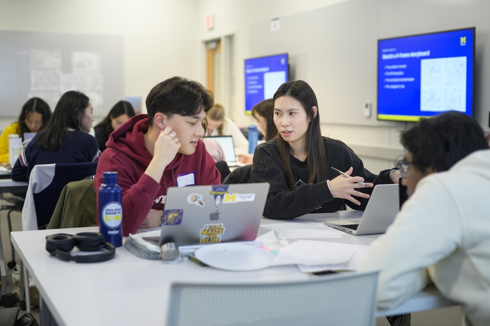

Build Strong Working Relationships
The beginning of an engaged learning experience establishes the foundation for the entire project. Meet with your community or organizational partner early to learn about their mission, priorities, working environment, and expectations. Approach these conversations with curiosity and recognize that partners bring valuable knowledge about their organization and the people they serve.

Questions for Your First Partner Meeting
- What problem or opportunity is the project intended to address?
- Who will use or be affected by the final work?
- What would a successful outcome look like to the partner?
- Are there important organizational, community, or technical constraints?
- Who should the team contact when questions or concerns arise?
Establish Roles and Expectations
Clear responsibilities help teams avoid confusion and complete work more effectively. Discuss each team member’s skills, interests, availability, and learning goals. Assign initial responsibilities while remaining flexible as the project develops.

Create a Team Agreement
A team agreement should explain how members will communicate, make decisions, share files, meet deadlines, and respond when someone needs assistance. It should also identify how the team will resolve disagreements and keep the partner informed.
Create a Shared Project Plan
Work with the partner to translate the project’s goals into realistic tasks, milestones, and deliverables. Confirm what is included in the project, what is outside its scope, and when the team will provide updates. Record important decisions so that students and partners share the same understanding of the work.
Project Launch Checklist
- Confirm the project goals and intended users.
- Define team and partner responsibilities.
- Select communication tools and meeting times.
- Identify major milestones and deadlines.
- Discuss potential risks, barriers, and needed resources.
- Schedule the next partner check-in.